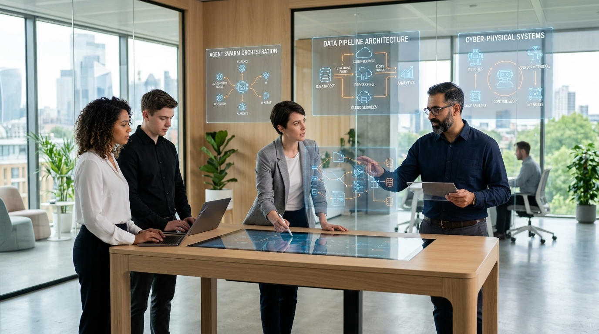

What will the IT industry look like after 2030? Will programmers disappear? Will artificial intelligence write all software? Will companies still need developers? What technologies will dominate the next decade?
The answer is more complicated than simply saying: “AI will replace programmers.”
The IT industry is not disappearing. It is changing. Traditional software development, repetitive coding, basic testing, and routine IT operations are increasingly being automated. At the same time, demand is growing for artificial intelligence, agentic AI, cybersecurity, cloud infrastructure, data engineering, robotics, engineering R&D, intelligent products, and industry-specific technology.
It is: “What will IT become?”
1. IT Will Become AI-Native
In the past, AI was usually added to an existing software product as a feature. After 2030, many products are likely to be designed around AI from the beginning.
Instead of the old model:
We are moving toward:
Examples of future AI-powered systems include:
- AI business assistants: Organizing workflows and preparing briefings.
- AI customer-support systems: Resolving end-to-end user requests.
- AI coding systems: Generating implementation code and tests from specifications.
- AI research assistants: Reviewing and summarizing technical papers and data.
- AI financial and healthcare analysts: Auditing transactions and flagging anomalies.
- AI cybersecurity systems: Detecting threats and securing networks in real time.
Microsoft's recent technology strategy demonstrates this direction through Azure AI infrastructure, Copilot, AI agents, AI-powered security, and GitHub Copilot. The important change is that AI is becoming part of the fundamental architecture of software rather than simply another feature.
2. Agentic AI Could Change Software
The next major step after conversational AI assistants is agentic AI. A traditional software application waits for instructions. An AI agent can receive a goal, reason about the task, use tools, retrieve information, make decisions, and take actions.
Imagine telling an AI: “Find why our sales dropped, analyse the customer data, identify the problem, create a report, and send it to the management team.”
A future agent could perform much of that workflow instead of requiring a person to manually operate several applications.

Interactive Simulator: A Day in the Life (2032)
Click a time slot to see how daily IT engineering work operates.
Natural Intent Specification & Agent Swarm Seeding
The engineer frames high-level business goals, safety limits, and performance boundaries. A cluster of specialized agents creates the implementation specifications without manual syntax typing.
[09:00:14] Orchestrator: Ingested Intent -> "Deploy low-latency routing for medical delivery in Chennai". [09:00:18] Sub-Agent Pool: 14 modules compiled and validated automatically.
3. Software Development Will Change
The traditional development process looked like:
The emerging model looks more like:
AI can generate code, test suites, documentation, and even parts of application architecture. That means developers will spend less time writing repetitive code and more time working on:
- System architecture and design
- Debugging and reliability
- Security validation
- AI orchestration
- Domain knowledge and customer problems
4. Cloud Will Become AI Infrastructure
Cloud computing used to mean renting servers and storage over the internet. The next generation of cloud combines computing, storage, databases, AI models, GPUs, data platforms, AI agents, and real-time edge analytics. Demand for physical computing infrastructure will continue to expand.
5. Cybersecurity Will Become More Important
More AI means more software. More software means more automation. More automation means a larger attack surface, requiring more cybersecurity. Autonomous threat detection, identity systems, and secure software supply chains will be critical areas.
6. Software and Hardware Will Merge
The future of technology will not be limited to websites and mobile apps. Software will increasingly become part of physical products: robotics, automobiles, electric vehicles, medical devices, and smart factories. NASSCOM research identifies engineering R&D and intelligent products as key growth areas toward 2030.
7. The Automotive Industry in Chennai
Modern vehicles are already becoming computers on wheels. Future vehicles will depend on software-defined architectures, autonomous driving systems, and battery management software.
This is especially important for Chennai, which has a major automotive and manufacturing ecosystem. The future vehicle requires an integration of:
8. Smart Manufacturing & Healthcare
Factories are changing from Machines + Workers to Machines + Sensors + Robots + AI + Software + Humans. Digital twins and automated quality control connect software with physical production. In healthcare, AI diagnostics and remote patient monitoring support doctors in making faster, better-informed decisions.

9. India & Chennai After 2030
NASSCOM's strategic review estimates that India's technology industry could exceed $315 Billion in FY26, with direct employment approaching 6 million. In addition, India’s Global Capability Centre (GCC) market is projected to reach $99–105 Billion by 2030 with roughly 2,100 to 2,200 GCCs.
Tamil Nadu contributes more than 20% of India's IT workforce. Because Chennai is simultaneously an automotive hub, an electronics exporter, and a medical capital, its technology future does not rely solely on traditional software outsourcing.
- Enterprise AI Agents
- Autonomous Coding Tools
- AI Infrastructure
- Software-Defined Vehicles
- Battery Management Systems
- ADAS Sensor Integration
- Robotics & Vision Systems
- Digital Twin Simulators
- Predictive Maintenance
- Chip Design Verification
- Embedded Systems Firmware
- Edge Accelerators
10. What Will Happen to Programmers?
The World Economic Forum's Future of Jobs Report 2025 lists software and application developers among the fastest-growing technology roles toward 2030.
The evidence shows that coding is changing rather than disappearing:
- Coding changes: Routine syntax is automated.
- Engineering changes: System design, reliability, and security become primary.
- Human judgment increases: Deciding what to build and evaluating outcomes requires human leadership.